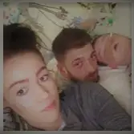
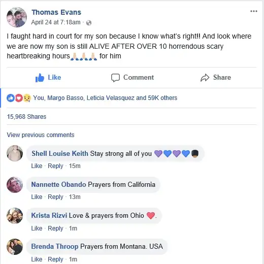

It’s an oldie, but somehow, as I sift through the long-ago memories of my past, it is accessible — the song composed for the 1966 film “Alfie,” by the same name, by songwriters Burt Bacharach and Hal David.
Never, though, have the words risen to the top of my consciousness with such purpose, for I can’t help but see how very fitting they are as we confront, this week especially, a modern-day controversy over the life of one little boy named Alfie.
Those who know his story, which has gone viral in recent weeks, will recognize the parallels:
What’s it all about, Alfie?
Is it just for the moment we live?
What’s it all about when you sort it out, Alfie?
Are we meant to take more than we give
Or are we meant to be kind?
And if only fools are kind, Alfie
Then I guess it is wise to be cruel
And if life belongs only to the strong, Alfie
What will you lend on an old golden rule?
As sure as I believe there’s a heaven above, Alfie
I know there’s something much more,
Something even non-believers can believe in
I believe in love, Alfie
Without true love we just exist, Alfie
Until you find the love you’ve missed you’re nothing, Alfie
When you walk let your heart lead the way
And you’ll find love any day, Alfie
Alfie
Plenty of pieces have been written about this sweet little man, so I’m not going to recount the many details and passionate arguments already recorded and bantered over. What I want to share are my thoughts on why we do — and should — care so much.
Even Pope Francis has chimed in with his support for Alfie, and the possibility of transferring him away from the hospital in the UK where he’s been, in the minds of some, hostage, to another in Italy where, it is hoped, he would receive more compassionate attention.
I’ve had one friend defend the hospital. She works in the healthcare field, and I can only imagine how this case must challenge her. I do want to be sensitive about the fact that despite the scary ant-life sentiments that have been raised here, there are likely just as many compassionate and truly loving people in this field, and even within this hospital, who would lay down their lives to help Alfie live.
But the Culture of Death, like its master, works quietly, stealthily. And so it is present.
As a mother, I see this case primarily in the light of the deep, undaunted parent-child bond. If I were Alfie’s parents, I, too, would be doing everything to make life as gentle as possible for my child, for as long as possible. Though it’s likely the hospital never meant for this all to happen this way, many troubling realities have been revealed through Alfie’s case; dark things meant to be hidden.
But now, an innocent boy has brought light into that darkness. He has, through his sweet face, the passionate love of his parents, and his will to live in response to the love that surrounds him, shown the world that love is still the best thing around, and still worth fighting for.

It’s been reported that the medical staff was shocked that Alfie, when removed from machines helping him breathe, continued to breathe on his own. In my own life, I have witnessed both the sweet sacrifices and the painful pride of the medical community.
In Alfie’s case, I see pride through medical decision-makers wanting to take control of a child’s life, not trusting enough in the power of the love of his parents. And I see how people around the world have been touched — and mobilized — by this one precious child.
Alfie is the sacrificial lamb, reminding us of Christ and what he came to show us. And what is that revelation but love, borne from the hearts of a father and a mother for their flesh and blood; a child who is a body and soul manifestation of their love for one another.
It’s a reminder of the eternal truths of love, that it cannot be suppressed, unconvinced, or killed, no matter how much the darkness of this world might wish it.

To me, THAT’S the answer to the question of, What’s it all about, Alfie?
Alfie’s family was allowed this cross of being invaded, misunderstood, undermined, and left flinging and fighting for their little boy to the point of exasperation.
And these sacrifices became a gift to us all, reminding this weary world, once again, of this unshakable, unparalleled force of light called love; pure love.
Q4U: When did the power of love show you its gentle might?